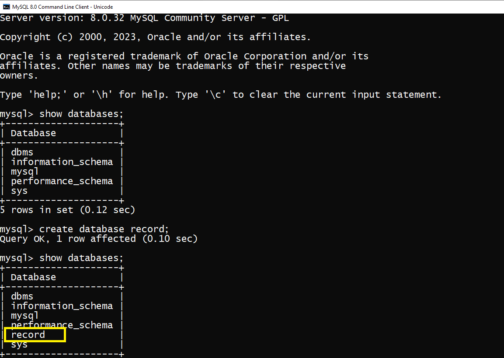

A database is used to store the collection of records in an organized form. MYSQL i,plements a databse as a
directory that stores all files in the form of table.
For creating databases in mysql we can use the create command with database keyword in
MySQL command line client. Using this command we create a database in MySQL.
For example, in the example we create the record database using CREATE DATABASE command and after that we can
see the database using show command.
create database databasename;
How we can create database.
In this output the record database will be created and we can see the record database in the table (see highlighting area).